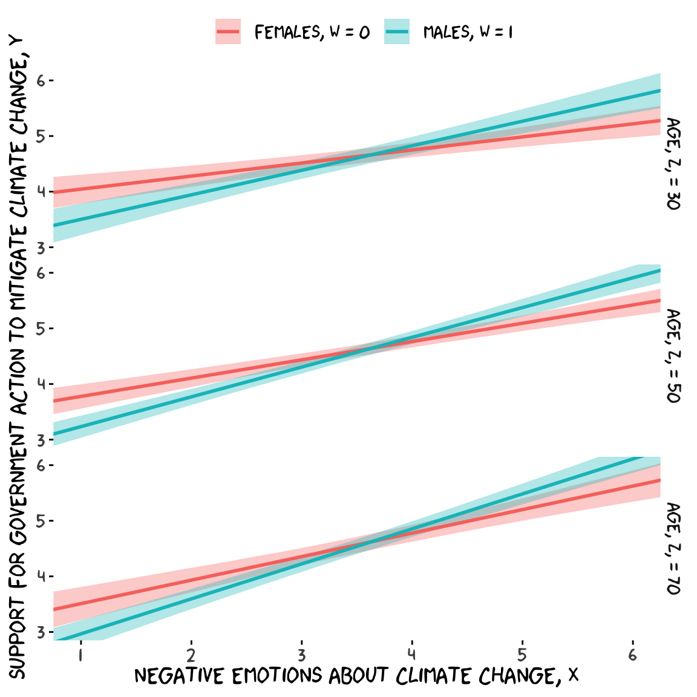
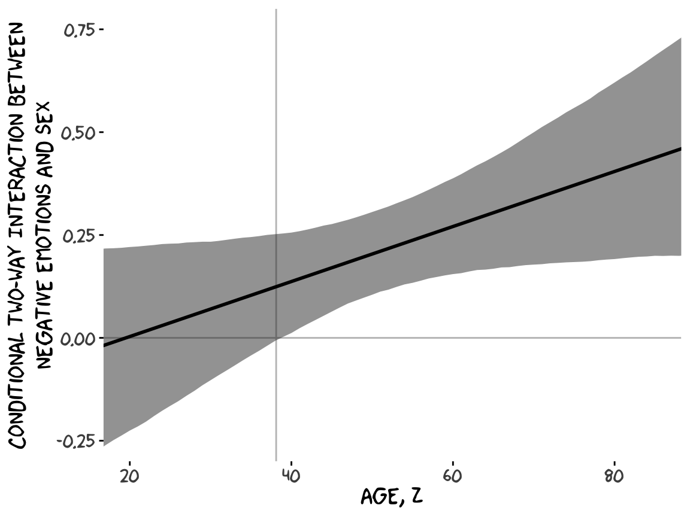

9 Some Myths and Additional Extensions of Moderation Analysis
In this chapter, our Bayesian approach complicates some of Hayes’s flow. We’ll see how Bayesian HMC estimation can make us reconsider the value in mean centering and we’ll also slip in some missing data talk.
9.1 Truths and myths about mean-centering
Mean-centering has been recommended in a few highly regarded books on regression analysis (e.g., Aiken & West, 1991; Cohen et al., 2003), and several explanations have been offered for why mean-centering should be undertaken prior to computation of the product and model estimation. The explanation that seems to have resulted in the most misunderstanding is that \(X\) and \(W\) are likely to be highly correlated with \(XW\) and this will produce estimation problems caused by collinearity and result in poor or “strange” estimates of regression coefficients, large standard errors, and reduced power of the statistical test of the interaction. But this is, in large part, simply a myth. As I describe later, there are some reasons that mean-centering the focal antecedent or moderator variables can be a beneficial thing to do, which is why it has been recommended by some. However, it is incorrect to claim that it is necessary, that a failure to do so will lead one to incorrect inferences about moderation, or that the resulting regression coefficients are somehow strange or inherently uninterpretable. (Andrew F. Hayes, 2018, pp. 304–305, emphasis in the original)
Here we load a couple necessary packages, load the data, and take a glimpse().
library(tidyverse)
glbwarm <- read_csv("data/glbwarm/glbwarm.csv")
glimpse(glbwarm)## Rows: 815
## Columns: 7
## $ govact <dbl> 3.6, 5.0, 6.6, 1.0, 4.0, 7.0, 6.8, 5.6, 6.0, 2.6, 1.4, 5.6, 7.0, 3.8, 3.4, 4.2, 1.0, 2…
## $ posemot <dbl> 3.67, 2.00, 2.33, 5.00, 2.33, 1.00, 2.33, 4.00, 5.00, 5.00, 1.00, 4.00, 1.00, 5.67, 3.…
## $ negemot <dbl> 4.67, 2.33, 3.67, 5.00, 1.67, 6.00, 4.00, 5.33, 6.00, 2.00, 1.00, 4.00, 5.00, 4.67, 2.…
## $ ideology <dbl> 6, 2, 1, 1, 4, 3, 4, 5, 4, 7, 6, 4, 2, 4, 5, 2, 6, 4, 2, 4, 4, 2, 6, 4, 4, 3, 4, 5, 4,…
## $ age <dbl> 61, 55, 85, 59, 22, 34, 47, 65, 50, 60, 71, 60, 71, 59, 32, 36, 69, 70, 41, 48, 38, 63…
## $ sex <dbl> 0, 0, 1, 0, 1, 0, 1, 1, 1, 1, 1, 0, 1, 0, 1, 1, 1, 0, 0, 0, 0, 1, 1, 1, 1, 1, 1, 0, 0,…
## $ partyid <dbl> 2, 1, 1, 1, 1, 2, 1, 1, 2, 3, 2, 1, 1, 1, 1, 1, 2, 3, 1, 3, 2, 1, 3, 2, 1, 1, 1, 3, 1,…Before we fit our models, we’ll go ahead and make our mean-centered predictors, negemot_c and age_c.
glbwarm <- glbwarm %>%
mutate(negemot_c = negemot - mean(negemot),
age_c = age - mean(age))Now we’re ready to fit Models 1 and 2. But before we do, it’s worth repeating part of the text:
Let’s load brms.
library(brms)As we’ll see in just a bit, there are some important reasons for Bayesians using HMC to mean center that wouldn’t pop up within the OLS paradigm. First let’s fit model9.1 and model9.2. model9.1 follows the conventional moderation equation
\[Y = i_Y + b_1 X + b_2 W + b_3 XW + e_Y.\]
model9.2 is our mean-centered model, which we can express formally as
\[\begin{align*} Y & = i_Y + b_1 \left (X - \overline X \right ) + b_2 \left (W - \overline W \right ) + b_3 \left (X - \overline X \right ) \left (W - \overline W \right ) + e_Y, \; \text{or more simply} \\ & = i_Y + b_1 X' + b_2 W' + b_3 X'W' + e_Y, \end{align*}\]
where \(X' = \left (X - \overline X \right)\) and so on.
model9.1 <- brm(
data = glbwarm,
family = gaussian,
govact ~ 1 + negemot + age + negemot:age,
cores = 4,
file = "fits/model09.01")
model9.2 <- brm(
data = glbwarm,
family = gaussian,
govact ~ 1 + negemot_c + age_c + negemot_c:age_c,
cores = 4,
file = "fits/model09.02")As with Hayes’s OLS models, our HMC models yield the same Bayesian \(R^2\) distributions, within simulation error.
bayes_R2(model9.1) %>% round(digits = 3)## Estimate Est.Error Q2.5 Q97.5
## R2 0.353 0.021 0.31 0.395bayes_R2(model9.2) %>% round(digits = 3)## Estimate Est.Error Q2.5 Q97.5
## R2 0.354 0.022 0.309 0.395Our model summaries also correspond nicely with those at the top of Table 9.1.
print(model9.1, digits = 3)## Family: gaussian
## Links: mu = identity; sigma = identity
## Formula: govact ~ 1 + negemot + age + negemot:age
## Data: glbwarm (Number of observations: 815)
## Draws: 4 chains, each with iter = 2000; warmup = 1000; thin = 1;
## total post-warmup draws = 4000
##
## Population-Level Effects:
## Estimate Est.Error l-95% CI u-95% CI Rhat Bulk_ESS Tail_ESS
## Intercept 4.326 0.329 3.683 4.972 1.002 1588 1820
## negemot 0.149 0.085 -0.018 0.313 1.002 1567 1674
## age -0.030 0.006 -0.043 -0.019 1.001 1577 1795
## negemot:age 0.007 0.002 0.004 0.010 1.002 1582 1900
##
## Family Specific Parameters:
## Estimate Est.Error l-95% CI u-95% CI Rhat Bulk_ESS Tail_ESS
## sigma 1.096 0.028 1.043 1.152 1.001 2439 2301
##
## Draws were sampled using sampling(NUTS). For each parameter, Bulk_ESS
## and Tail_ESS are effective sample size measures, and Rhat is the potential
## scale reduction factor on split chains (at convergence, Rhat = 1).print(model9.2, digits = 3)## Family: gaussian
## Links: mu = identity; sigma = identity
## Formula: govact ~ 1 + negemot_c + age_c + negemot_c:age_c
## Data: glbwarm (Number of observations: 815)
## Draws: 4 chains, each with iter = 2000; warmup = 1000; thin = 1;
## total post-warmup draws = 4000
##
## Population-Level Effects:
## Estimate Est.Error l-95% CI u-95% CI Rhat Bulk_ESS Tail_ESS
## Intercept 4.598 0.039 4.523 4.673 1.001 3546 2870
## negemot_c 0.500 0.026 0.450 0.550 1.001 3028 2497
## age_c -0.005 0.002 -0.010 -0.001 1.000 6198 3194
## negemot_c:age_c 0.007 0.002 0.004 0.010 1.001 4978 3451
##
## Family Specific Parameters:
## Estimate Est.Error l-95% CI u-95% CI Rhat Bulk_ESS Tail_ESS
## sigma 1.097 0.026 1.046 1.147 1.002 3640 2342
##
## Draws were sampled using sampling(NUTS). For each parameter, Bulk_ESS
## and Tail_ESS are effective sample size measures, and Rhat is the potential
## scale reduction factor on split chains (at convergence, Rhat = 1).However, notice the ‘Bulk_ESS’ and ‘Tail_ESS’ columns. The values for model9.2 were substantially larger than those for model9.1. These columns denote the number of effective samples (a.k.a. the effective sample size). Versions of brms before 2.10.0 returned a single effective sample size (ESS) value per parameter. We will cover where the change came from in a bit. But first, recall that we’ve been using brms defaults, which results in 4 HMC chains, each of which contains 2,000 draws (iterations), the first 1,000 of which are warmup values. After we discard the warmup values, that leaves 1,000 draws from each chain–4,000 total. As it turns out, Markov chains, and thus HMC chains, are typically autocorrelated, which means that each draw is partially dependent on the previous draw. Ideally, the autocorrelations are near zero. That’s often not the case.
The bayesplot package offers a variety of diagnostic plots. Here we’ll use the mcmc_acf() function to make autocorrelation plots for all model parameters.
But before we get there, we’ll be using an ggthemes-based theme for our plots in this chapter.
# load
library(bayesplot)
library(ggthemes)
# adjust the global settings
theme_set(
theme_tufte(base_size = 13) +
theme(panel.background = element_rect(fill = "grey98", linewidth = 0))
)
# to reset the default ggplot2 theme to its default parameters, execute:
# theme_set(theme_gray())The theme_tufte() function will let us follow some of Edward Tufte’s preferred aesthecic principles (Tufte, 2001), and the theme_set() function will make these the default plot settings. To undo this, just execute theme_set(theme_gray()). But anyways, here are our mcmc_acf() plots.
draws1 <- as_draws_df(model9.1)
draws2 <- as_draws_df(model9.2)
mcmc_acf(draws1,
pars = c("b_Intercept", "b_negemot", "b_age", "b_negemot:age", "sigma"),
lags = 4)
mcmc_acf(draws2,
pars = c("b_Intercept", "b_negemot_c", "b_age_c", "b_negemot_c:age_c", "sigma"),
lags = 4)
High autocorrelations in the HMC chains have consequences for the effective sample size. In their (2022) vignette, Visual MCMC diagnostics using the bayesplot package, Gabry and Modrák wrote:
The effective sample size is an estimate of the number of independent draws from the posterior distribution of the estimand of interest. Because the draws within a Markov chain are not independent if there is autocorrelation, the effective sample size, \(n_\textit{eff}\), will be smaller than the total sample size, \(N\). The larger the ratio of \(n_\textit{eff}\) to \(N\) the better.
In that quote, they spoke as if there was only one measure of ESS. Though this has been the case for some time, times have changed. In a (2019) paper, Stan-team allstars Vehtari, Gelman, Simpson, Carpenter, and Bürkner proposed two measures of ESS: “bulk-ESS” and “tail-ESS.” From their paper, we read:
if you plan to report quantile estimates or posterior intervals, we strongly suggest assessing the convergence of the chains for these quantiles. In Section 4.3 we show that convergence of Markov chains is not uniform across the parameter space and propose diagnostics and effective sample sizes specifically for extreme quantiles. This is different from the standard ESS estimate (which we refer to as the “bulk-ESS”), which mainly assesses how well the centre of the distribution is resolved. Instead, these “tail-ESS” measures allow the user to estimate the MCSE for interval estimates. (p. 5, emphasis in the original)
You can read the paper for technical details. In short, the Bulk_ESS in the output of brms 2.10.0 and up is what was previously referred to as Eff.Sample, the effective sample size. This indexed the number of effective samples in “the centre of the” posterior distribution (i.e., the posterior mean or median). But since we also care about uncertainty in our models, we also care about how well we have characterized the tails of the posterior distribution in 95% intervals and such. The new Tail_ESS in brms output allows us to gauge the effective sample size for those intervals.
The Bulk_ESS and Tail_ESS values were all well above 2,000 with model9.2 and the autocorrelations were very low, too. model9.1 had higher autocorrelations and lower ESS values. The upshot is that even though we have 4,000 samples for each parameter, those samples don’t necessarily give us the same quality of information fully independent samples would. Bulk_ESS and Tail_ESS values help you determine how concerned you should be. And, as it turns out, things like centering can help increase a models Bulk_ESS and Tail_ESS values.
Wading in further, we can use the neff_ratio() function to collect the \(N_\textit{eff}\) to \(N\) ratio for each model parameter and then use mcmc_neff() to make a visual diagnostic. Here we do so for model9.1 and model9.2.
ratios_model9.1 <- neff_ratio(
model9.1,
pars = c("b_Intercept", "b_negemot", "b_age", "b_negemot:age", "sigma"))
ratios_model9.2 <- neff_ratio(
model9.2,
pars = c("b_Intercept", "b_negemot_c", "b_age_c", "b_negemot_c:age_c", "sigma"))
mcmc_neff(ratios_model9.1) +
yaxis_text(hjust = 0)
mcmc_neff(ratios_model9.2) +
yaxis_text(hjust = 0)
Although none of the \(N_\textit{eff}\) to \(N\) ratios were in the shockingly-low range for either model, there were substantially higher for model9.2.
In addition to autocorrelations and \(N_\textit{eff}\) to \(N\) ratios, there is also the issue that the parameters in the model can themselves be correlated. If you like a visual approach, you can use brms::pairs() to make quick and dirty histograms for each parameter along with scatter plots showing the shape of their correlations.
Here we’ll take a similar approach, but with functions from the GGally package (Schloerke et al., 2021), which will also compute the point estimates for the bivariate correlations.
library(GGally)
draws1 %>%
select(b_Intercept:sigma) %>%
ggpairs(upper = list(continuous = wrap("cor", stars = FALSE)),
lower = list(continuous = wrap("points", size = 1/10, alpha = 1/4)))
draws2 %>%
select(b_Intercept:sigma) %>%
ggpairs(upper = list(continuous = wrap("cor", stars = FALSE)),
lower = list(continuous = wrap("points", size = 1/10, alpha = 1/4)))
When fitting models with HMC, centering can make a difference for the parameter correlations. If you prefer a more numeric approach, vcov() will yield the variance/covariance matrix–or correlation matrix when using correlation = T–for the parameters in a model.
vcov(model9.1, correlation = T) %>% round(digits = 2)## Intercept negemot age negemot:age
## Intercept 1.00 -0.93 -0.96 0.88
## negemot -0.93 1.00 0.89 -0.96
## age -0.96 0.89 1.00 -0.92
## negemot:age 0.88 -0.96 -0.92 1.00vcov(model9.2, correlation = T) %>% round(digits = 2)## Intercept negemot_c age_c negemot_c:age_c
## Intercept 1.00 0.02 -0.02 0.05
## negemot_c 0.02 1.00 0.07 -0.08
## age_c -0.02 0.07 1.00 0.02
## negemot_c:age_c 0.05 -0.08 0.02 1.00And so wait, what does that even mean for a parameter to correlate with another parameter? you might ask. Fair enough. Let’s compute a parameter correlation step by step. The first step requires as_draws_df().
draws <- as_draws_df(model9.1)
head(draws)## # A draws_df: 6 iterations, 1 chains, and 7 variables
## b_Intercept b_negemot b_age b_negemot:age sigma lprior lp__
## 1 4.0 0.25 -0.023 0.0052 1.1 -3.3 -1233
## 2 4.0 0.26 -0.024 0.0050 1.1 -3.3 -1234
## 3 4.0 0.26 -0.024 0.0054 1.1 -3.3 -1236
## 4 4.1 0.24 -0.025 0.0052 1.1 -3.3 -1235
## 5 3.9 0.26 -0.022 0.0048 1.1 -3.3 -1234
## 6 3.7 0.26 -0.021 0.0057 1.1 -3.3 -1236
## # ... hidden reserved variables {'.chain', '.iteration', '.draw'}Now we’ve put our posterior draws into a data object, draws, we can make a scatter plot of two parameters. Here we’ll choose b_negemot and the interaction coefficient, b_negemot:age.
draws %>%
ggplot(aes(x = b_negemot, y = `b_negemot:age`)) +
geom_point(size = 1/10, alpha = 1/5) +
labs(subtitle = "Each dot is the parameter pair from a\nsingle draw. Looking across the 4,000\ntotal posterior draws, it becomes clear\nthe two parameters are strongly\nnegatively correlated.")
And indeed, the Pearson’s correlation coefficient is strong.
draws %>%
summarise(rho = cor(b_negemot, `b_negemot:age`))## # A tibble: 1 × 1
## rho
## <dbl>
## 1 -0.958And what was that part from the vcov() output, again?
vcov(model9.1, correlation = T)["negemot", "negemot:age"]## [1] -0.9575866Boom! That’s where those correlations come from.
This entire topic of HMC diagnostics can seem baffling, especially when compared to the simplicity of OLS. If this is your first introduction, you might want to watch lectures 10 and 11 from McElreath’s Statistical Rethinking Fall 2017 lecture series. Accordingly, you might check out Chapter 8 of his (2015) text, Chapter 9 of his (2020) text, and either of my ebooks translating his work into brms and tidyverse code (Kurz, 2023b, 2023c).
9.1.1 The effect of mean-centering on multicollinearity and the standard error of \(b_3\).
This can be difficult to keep track of, but what we just looked at were the correlations among model parameters. These are not the same as correlations among variables. As such, those correlations are not the same as those in Table 9.2. But we can get those, too. First we’ll have to do a little more data processing to get all the necessary mean-centered variables and standardized variables.
glbwarm <- glbwarm %>%
mutate(negemot_x_age = negemot * age,
negemot_c_x_age_c = negemot_c * age_c,
negemot_z = (negemot - mean(negemot)) / sd(negemot),
age_z = (age - mean(age) ) / sd(age)) %>%
mutate(negemot_z_x_age_z = negemot_z * age_z)Recall that to get our sweet Bayesian correlations, we use the multivariate mvbind() syntax to fit an intercepts-only model. Here we do that for all three of the Table 9.2 sections.
model9.3 <- brm(
data = glbwarm,
family = gaussian,
bf(mvbind(negemot, age, negemot_x_age) ~ 1) +
set_rescor(TRUE),
cores = 4,
file = "fits/model09.03")
model9.4 <- brm(
data = glbwarm,
family = gaussian,
bf(mvbind(negemot_c, age_c, negemot_c_x_age_c) ~ 1) +
set_rescor(TRUE),
cores = 4,
file = "fits/model09.04")
model9.5 <- brm(
data = glbwarm,
family = gaussian,
bf(mvbind(negemot_z, age_z, negemot_z_x_age_z) ~ 1) +
set_rescor(TRUE),
cores = 4,
file = "fits/model09.05")Here are their summaries.
print(model9.3, digits = 3)## Family: MV(gaussian, gaussian, gaussian)
## Links: mu = identity; sigma = identity
## mu = identity; sigma = identity
## mu = identity; sigma = identity
## Formula: negemot ~ 1
## age ~ 1
## negemot_x_age ~ 1
## Data: glbwarm (Number of observations: 815)
## Draws: 4 chains, each with iter = 2000; warmup = 1000; thin = 1;
## total post-warmup draws = 4000
##
## Population-Level Effects:
## Estimate Est.Error l-95% CI u-95% CI Rhat Bulk_ESS Tail_ESS
## negemot_Intercept 3.559 0.055 3.453 3.667 1.002 3381 2350
## age_Intercept 49.532 0.557 48.407 50.613 1.002 3627 3003
## negemotxage_Intercept 174.869 3.439 168.250 181.825 1.001 2819 2513
##
## Family Specific Parameters:
## Estimate Est.Error l-95% CI u-95% CI Rhat Bulk_ESS Tail_ESS
## sigma_negemot 1.531 0.038 1.458 1.607 1.001 3131 2651
## sigma_age 16.357 0.409 15.590 17.194 1.001 2850 2515
## sigma_negemotxage 97.534 2.469 92.892 102.583 1.002 2552 2332
##
## Residual Correlations:
## Estimate Est.Error l-95% CI u-95% CI Rhat Bulk_ESS Tail_ESS
## rescor(negemot,age) -0.058 0.035 -0.126 0.013 1.002 2973 2509
## rescor(negemot,negemotxage) 0.766 0.014 0.736 0.792 1.002 2417 2726
## rescor(age,negemotxage) 0.547 0.025 0.497 0.597 1.000 3288 2668
##
## Draws were sampled using sampling(NUTS). For each parameter, Bulk_ESS
## and Tail_ESS are effective sample size measures, and Rhat is the potential
## scale reduction factor on split chains (at convergence, Rhat = 1).print(model9.4, digits = 3)## Family: MV(gaussian, gaussian, gaussian)
## Links: mu = identity; sigma = identity
## mu = identity; sigma = identity
## mu = identity; sigma = identity
## Formula: negemot_c ~ 1
## age_c ~ 1
## negemot_c_x_age_c ~ 1
## Data: glbwarm (Number of observations: 815)
## Draws: 4 chains, each with iter = 2000; warmup = 1000; thin = 1;
## total post-warmup draws = 4000
##
## Population-Level Effects:
## Estimate Est.Error l-95% CI u-95% CI Rhat Bulk_ESS Tail_ESS
## negemotc_Intercept -0.000 0.053 -0.104 0.107 1.001 6834 2675
## agec_Intercept -0.002 0.568 -1.113 1.099 1.000 7514 3082
## negemotcxagec_Intercept -1.415 0.858 -3.085 0.277 1.001 7225 2670
##
## Family Specific Parameters:
## Estimate Est.Error l-95% CI u-95% CI Rhat Bulk_ESS Tail_ESS
## sigma_negemotc 1.532 0.038 1.460 1.609 1.000 6710 2975
## sigma_agec 16.361 0.416 15.586 17.220 1.001 7604 3033
## sigma_negemotcxagec 24.238 0.620 23.054 25.467 1.000 7756 3126
##
## Residual Correlations:
## Estimate Est.Error l-95% CI u-95% CI Rhat Bulk_ESS Tail_ESS
## rescor(negemotc,agec) -0.057 0.034 -0.125 0.011 1.001 7774 3006
## rescor(negemotc,negemotcxagec) 0.091 0.036 0.022 0.161 1.004 6921 2992
## rescor(agec,negemotcxagec) -0.015 0.034 -0.082 0.054 1.005 6687 2616
##
## Draws were sampled using sampling(NUTS). For each parameter, Bulk_ESS
## and Tail_ESS are effective sample size measures, and Rhat is the potential
## scale reduction factor on split chains (at convergence, Rhat = 1).print(model9.5, digits = 3)## Family: MV(gaussian, gaussian, gaussian)
## Links: mu = identity; sigma = identity
## mu = identity; sigma = identity
## mu = identity; sigma = identity
## Formula: negemot_z ~ 1
## age_z ~ 1
## negemot_z_x_age_z ~ 1
## Data: glbwarm (Number of observations: 815)
## Draws: 4 chains, each with iter = 2000; warmup = 1000; thin = 1;
## total post-warmup draws = 4000
##
## Population-Level Effects:
## Estimate Est.Error l-95% CI u-95% CI Rhat Bulk_ESS Tail_ESS
## negemotz_Intercept -0.000 0.036 -0.068 0.071 1.003 6857 2688
## agez_Intercept -0.000 0.036 -0.071 0.069 1.001 8325 3173
## negemotzxagez_Intercept -0.058 0.034 -0.125 0.008 1.002 7569 2570
##
## Family Specific Parameters:
## Estimate Est.Error l-95% CI u-95% CI Rhat Bulk_ESS Tail_ESS
## sigma_negemotz 1.002 0.025 0.957 1.051 1.001 7407 3188
## sigma_agez 1.002 0.025 0.954 1.053 1.003 7125 2860
## sigma_negemotzxagez 0.972 0.024 0.924 1.022 1.000 7615 2960
##
## Residual Correlations:
## Estimate Est.Error l-95% CI u-95% CI Rhat Bulk_ESS Tail_ESS
## rescor(negemotz,agez) -0.057 0.034 -0.123 0.011 1.000 6718 3132
## rescor(negemotz,negemotzxagez) 0.092 0.035 0.025 0.157 1.003 7782 3043
## rescor(agez,negemotzxagez) -0.014 0.035 -0.079 0.054 1.000 7116 3111
##
## Draws were sampled using sampling(NUTS). For each parameter, Bulk_ESS
## and Tail_ESS are effective sample size measures, and Rhat is the potential
## scale reduction factor on split chains (at convergence, Rhat = 1).A more condensed way to get that information might be with the brms::VarCorr() function. Just make sure to tack $residual__$cor onto the end.
VarCorr(model9.3)$residual__$cor %>%
round(digits = 3)## , , negemot
##
## Estimate Est.Error Q2.5 Q97.5
## negemot 1.000 0.000 1.000 1.000
## age -0.058 0.035 -0.126 0.013
## negemotxage 0.766 0.014 0.736 0.792
##
## , , age
##
## Estimate Est.Error Q2.5 Q97.5
## negemot -0.058 0.035 -0.126 0.013
## age 1.000 0.000 1.000 1.000
## negemotxage 0.547 0.025 0.497 0.597
##
## , , negemotxage
##
## Estimate Est.Error Q2.5 Q97.5
## negemot 0.766 0.014 0.736 0.792
## age 0.547 0.025 0.497 0.597
## negemotxage 1.000 0.000 1.000 1.000For the sake of space, I’ll let you check that out for model9.4 and model9.5. If you’re tricky with your VarCorr() indexing, you can also get the model-implied variances.
VarCorr(model9.3)$residual__$cov[1, , "negemot"] %>% round(digits = 3)## Estimate Est.Error Q2.5 Q97.5
## 2.345 0.117 2.126 2.584VarCorr(model9.3)$residual__$cov[2, , "age"] %>% round(digits = 3)## Estimate Est.Error Q2.5 Q97.5
## 267.732 13.412 243.033 295.643VarCorr(model9.3)$residual__$cov[3, , "negemotxage"] %>% round(digits = 3)## Estimate Est.Error Q2.5 Q97.5
## 9518.955 483.000 8628.892 10523.200And if you’re like totally lost with all this indexing, you might execute VarCorr(correlations1) %>% str() and spend a little time looking at what VarCorr() returns.
On page 309, Hayes explained why the OLS variance for \(b_3\) is unaffected by mean centering. The story was similar for our HMC model, too.
fixef(model9.1)["negemot:age", "Est.Error"]## [1] 0.001593736fixef(model9.2)["negemot_c:age_c", "Est.Error"]## [1] 0.001561218For more details, you might also see the Standardizing predictors and outputs subsection of Chapter 25 in the Stan user’s guide (Stan Development Team, 2022)–Stan, of course, being the computational engine underneath our brms hood.
9.1.2 The effect of mean-centering on \(b_1\), \(b_2\), and their standard errors posterior \(\textit{SD}\)’s.
A second explanation given for why mean-centering is preferred is that it makes \(b_1\) and \(b_2\), the regression coefficients for \(X\) and \(W\), more meaningful. This is generally true and thus not a myth, although it is not necessarily true in all circumstances… .
Mean-centering \(X\) and \(W\) prior to computation of the product and estimation of the model will produce \(b_1\) and \(b_2\) that are always meaningful, rather than meaningful only when \(X\) and/or \(W\) are meaningful when equal to zero… [After mean centering,] \(b_1\) estimates the difference in \(Y\) between two cases that differ by one unit on \(X\) among cases that are average on \(W\). Similarly, \(b_2\) estimates the difference in \(Y\) between two cases that differ by one unit on \(W\) among cases that are average on \(X\). These will always estimate conditional effects of \(X\) on \(Y\) within the range of the data, and they can always be interpreted. (p. 310. emphasis in the original)
If you only care about posterior means, you can use model9.1 to reproduce the results at the bottom of page 310 like this.
fixef(model9.1)["negemot", 1] +
fixef(model9.1)["negemot:age", 1] * mean(glbwarm$age)## [1] 0.500336Here’s the same computation using model9.2.
fixef(model9.2)["negemot_c", 1] +
fixef(model9.2)["negemot_c:age_c", 1] * mean(glbwarm$age_c)## [1] 0.50001But we’re proper Bayesians and like a summary of the spread in the posterior. So we’ll evoke as_draws_df() and the other usual steps, this time just focusing on model9.1.
draws <- as_draws_df(model9.1)
draws %>%
transmute(our_contidional_effect_given_W_bar = b_negemot + `b_negemot:age` * mean(glbwarm$age)) %>%
summarize(mean = mean(our_contidional_effect_given_W_bar),
sd = sd(our_contidional_effect_given_W_bar)) %>%
round(digits = 3)## # A tibble: 1 × 2
## mean sd
## <dbl> <dbl>
## 1 0.5 0.025Note how the standard error Hayes computed at the top of page 311 corresponds nicely with the posterior \(\textit{SD}\) we just computed. Hayes employed a fancy formula; we just used sd(). At any rate, the main message is centering did not effect our estimate of the conditional effect of \(X\). It turns out \((\theta_{X \rightarrow Y} | W) = \left (\theta_{\overline X \rightarrow Y} | \overline W \right)\).
9.2 The estimation and interpretation of standardized regression coefficients in a moderation analysis
Mean-centering does nothing to change the scaling of regression coefficients. Whether or not mean-centering is used when estimating a model of the form \(\hat Y = i_Y + b_1 X + b_2 W + b_3 XW\), \(b_1\), \(b_2\), and \(b_3\) are interpreted with respect to the measured metrics of \(X\), \(W\), and \(Y\) (i.e., in unstandardized form). Although [Hayes] generally prefer[s] to report and interpret regression analyses based on unstandardized coefficients, it is possible to generate regression coefficients that are analogous to standardized regression coefficients in regression models without a product term as a predictor. However, one must be careful when doing so. (p. 313, emphasis in the original)
9.2.1 Variant 1.
We’ve already computed standardized predictors. Now we just need to standardize the criterion, govact.
glbwarm <- glbwarm %>%
mutate(govact_z = (govact - mean(govact)) / sd(govact))Fit the model.
model9.6 <- update(
model9.1,
newdata = glbwarm,
govact_z ~ 1 + negemot_z + age_z + negemot_z:age_z,
cores = 4,
file = "fits/model09.06")Check the Bayesian \(R^2\).
bayes_R2(model9.6) %>% round(digits = 3)## Estimate Est.Error Q2.5 Q97.5
## R2 0.354 0.022 0.31 0.396Check the parameter summaries.
print(model9.6, digits = 3)## Family: gaussian
## Links: mu = identity; sigma = identity
## Formula: govact_z ~ negemot_z + age_z + negemot_z:age_z
## Data: glbwarm (Number of observations: 815)
## Draws: 4 chains, each with iter = 2000; warmup = 1000; thin = 1;
## total post-warmup draws = 4000
##
## Population-Level Effects:
## Estimate Est.Error l-95% CI u-95% CI Rhat Bulk_ESS Tail_ESS
## Intercept 0.008 0.028 -0.049 0.064 1.002 5036 2773
## negemot_z 0.562 0.028 0.506 0.617 1.000 4817 3310
## age_z -0.063 0.028 -0.119 -0.009 1.000 5995 3161
## negemot_z:age_z 0.131 0.029 0.075 0.188 1.003 5516 3067
##
## Family Specific Parameters:
## Estimate Est.Error l-95% CI u-95% CI Rhat Bulk_ESS Tail_ESS
## sigma 0.807 0.020 0.769 0.849 1.000 4653 3147
##
## Draws were sampled using sampling(NUTS). For each parameter, Bulk_ESS
## and Tail_ESS are effective sample size measures, and Rhat is the potential
## scale reduction factor on split chains (at convergence, Rhat = 1).If you go all the way up back to Table 9.1, you’ll see our results are pretty similar to those in the text.
9.2.2 Variant 2.
This time we need to standardize our interaction term, negemot_x_age_z, by hand.
glbwarm <- glbwarm %>%
mutate(negemot_x_age_z = (negemot_x_age - mean(negemot_x_age)) / sd(negemot_x_age))Now we’re ready to update().
model9.7 <- update(
model9.1,
newdata = glbwarm,
govact_z ~ 1 + negemot_z + age_z + negemot_x_age_z,
cores = 4,
file = "fits/model09.07")bayes_R2(model9.7) %>% round(digits = 3)## Estimate Est.Error Q2.5 Q97.5
## R2 0.354 0.022 0.31 0.395print(model9.7, digits = 3)## Family: gaussian
## Links: mu = identity; sigma = identity
## Formula: govact_z ~ negemot_z + age_z + negemot_x_age_z
## Data: glbwarm (Number of observations: 815)
## Draws: 4 chains, each with iter = 2000; warmup = 1000; thin = 1;
## total post-warmup draws = 4000
##
## Population-Level Effects:
## Estimate Est.Error l-95% CI u-95% CI Rhat Bulk_ESS Tail_ESS
## Intercept 0.000 0.028 -0.054 0.055 1.002 2671 2370
## negemot_z 0.169 0.096 -0.017 0.368 1.003 1426 2026
## age_z -0.366 0.074 -0.510 -0.221 1.003 1485 1958
## negemot_x_age_z 0.506 0.115 0.272 0.726 1.003 1441 1788
##
## Family Specific Parameters:
## Estimate Est.Error l-95% CI u-95% CI Rhat Bulk_ESS Tail_ESS
## sigma 0.806 0.020 0.768 0.845 1.002 2792 2142
##
## Draws were sampled using sampling(NUTS). For each parameter, Bulk_ESS
## and Tail_ESS are effective sample size measures, and Rhat is the potential
## scale reduction factor on split chains (at convergence, Rhat = 1).The results correspond nicely to those in Table 9.1, too.
9.3 A caution on manual centering and standardization [because of missing data]
It’s worthwhile considering the issue of listwise deletion when data are partially missing. The brms default is to delete rows with missingness, NA in R, for the predictors. However, brms allows users to perform one-step Bayesian imputation for missing values using the mi() syntax. You can learn all the details in Bürkner’s (2022c) vignette, Handle missing values with brms. First we’ll fit see what happens when you fit a model in brms when some of the negemot_z values are missing, but without using the mi() syntax. And of course before we do that, we’ll make a negemot_z_missing variable, which is identical to negemot_z, but about 10% of the values are missing.
set.seed(9)
glbwarm <- glbwarm %>%
mutate(missing = rbinom(n = n(), size = 1, prob = .1)) %>%
mutate(negemot_z_missing = ifelse(missing == 1, NA, negemot_z))If you’ve never used rbinom() before, execute ?rbinom or look it up in your favorite web search engine. Here’s our listwise deletion model, which corresponds to what you’d get from a typical OLS-based program.
model9.8 <- update(
model9.6,
newdata = glbwarm,
govact_z ~ 1 + negemot_z_missing + age_z + negemot_z_missing:age_z,
cores = 4,
file = "fits/model09.08")## Warning: Rows containing NAs were excluded from the model.
## Warning: Rows containing NAs were excluded from the model.Note the warning. Let’s compare the listwise deletion results with the model based on all the data.
print(model9.6)## Family: gaussian
## Links: mu = identity; sigma = identity
## Formula: govact_z ~ negemot_z + age_z + negemot_z:age_z
## Data: glbwarm (Number of observations: 815)
## Draws: 4 chains, each with iter = 2000; warmup = 1000; thin = 1;
## total post-warmup draws = 4000
##
## Population-Level Effects:
## Estimate Est.Error l-95% CI u-95% CI Rhat Bulk_ESS Tail_ESS
## Intercept 0.01 0.03 -0.05 0.06 1.00 5036 2773
## negemot_z 0.56 0.03 0.51 0.62 1.00 4817 3310
## age_z -0.06 0.03 -0.12 -0.01 1.00 5995 3161
## negemot_z:age_z 0.13 0.03 0.08 0.19 1.00 5516 3067
##
## Family Specific Parameters:
## Estimate Est.Error l-95% CI u-95% CI Rhat Bulk_ESS Tail_ESS
## sigma 0.81 0.02 0.77 0.85 1.00 4653 3147
##
## Draws were sampled using sampling(NUTS). For each parameter, Bulk_ESS
## and Tail_ESS are effective sample size measures, and Rhat is the potential
## scale reduction factor on split chains (at convergence, Rhat = 1).print(model9.8)## Family: gaussian
## Links: mu = identity; sigma = identity
## Formula: govact_z ~ negemot_z_missing + age_z + negemot_z_missing:age_z
## Data: glbwarm (Number of observations: 731)
## Draws: 4 chains, each with iter = 2000; warmup = 1000; thin = 1;
## total post-warmup draws = 4000
##
## Population-Level Effects:
## Estimate Est.Error l-95% CI u-95% CI Rhat Bulk_ESS Tail_ESS
## Intercept 0.00 0.03 -0.06 0.06 1.00 5199 2635
## negemot_z_missing 0.57 0.03 0.51 0.63 1.01 5293 3192
## age_z -0.04 0.03 -0.10 0.01 1.00 4783 2985
## negemot_z_missing:age_z 0.12 0.03 0.06 0.19 1.00 4596 3158
##
## Family Specific Parameters:
## Estimate Est.Error l-95% CI u-95% CI Rhat Bulk_ESS Tail_ESS
## sigma 0.81 0.02 0.77 0.85 1.00 5378 2854
##
## Draws were sampled using sampling(NUTS). For each parameter, Bulk_ESS
## and Tail_ESS are effective sample size measures, and Rhat is the potential
## scale reduction factor on split chains (at convergence, Rhat = 1).In this case, the model results were similar to those based on all the data because we used rbinom() to delete the predictor values completely at random. With real data and real-live missing data mechanisms, the situation isn’t often so rosy. But anyway, the real story, here, is the Data: glbwarm (Number of observations: n) line at the top of the print() outputs. The number, \(n\), was 815 in the model using all the data and 731 for the one based on listwise deletion. That’s a lot of missing information.
The mi() syntax will allow us to use all the rows in a model, even if one or more of the predictors contain missing values. The syntax makes the model a multivariate model in that now we’ll be modeling both govact_z and negemot_z_missing. As we’ve covered in prior chapters, there are multiple ways to write a multivariate model in brms (see Bürkner, 2022b). One nice way is to write the model for each criterion separately in a bf() statement. You combine the bf() statements together with the + operator. And for models like the ones in Hayes’s text, you’ll also want to tack on set_rescor(FALSE). You can do this within the brm() function, as usual. But I find that this clutters the code up more than I like. So another approach is to save the combination of bf() statements as an object.
my_model <-
bf(govact_z ~ 1 + mi(negemot_z_missing) + age_z + mi(negemot_z_missing):age_z) +
bf(negemot_z_missing | mi() ~ 1) +
set_rescor(FALSE)With our multivariate formula saved as my_model, we’re ready to plug it into brm() and fit.
model9.9 <- brm(
data = glbwarm,
family = gaussian,
my_model,
cores = 4,
file = "fits/model09.09")Let’s see what we’ve done.
print(model9.9)## Family: MV(gaussian, gaussian)
## Links: mu = identity; sigma = identity
## mu = identity; sigma = identity
## Formula: govact_z ~ 1 + mi(negemot_z_missing) + age_z + mi(negemot_z_missing):age_z
## negemot_z_missing | mi() ~ 1
## Data: glbwarm (Number of observations: 815)
## Draws: 4 chains, each with iter = 2000; warmup = 1000; thin = 1;
## total post-warmup draws = 4000
##
## Population-Level Effects:
## Estimate Est.Error l-95% CI u-95% CI Rhat Bulk_ESS Tail_ESS
## govactz_Intercept 0.01 0.03 -0.05 0.07 1.00 4840 2622
## negemotzmissing_Intercept -0.00 0.04 -0.07 0.07 1.00 4464 2557
## govactz_age_z -0.06 0.03 -0.12 -0.00 1.00 5063 2605
## govactz_minegemot_z_missing 0.57 0.03 0.51 0.63 1.00 5013 3246
## govactz_minegemot_z_missing:age_z 0.13 0.03 0.07 0.18 1.00 4818 3114
##
## Family Specific Parameters:
## Estimate Est.Error l-95% CI u-95% CI Rhat Bulk_ESS Tail_ESS
## sigma_govactz 0.80 0.02 0.76 0.85 1.00 4646 2726
## sigma_negemotzmissing 1.00 0.03 0.95 1.05 1.00 3937 3080
##
## Draws were sampled using sampling(NUTS). For each parameter, Bulk_ESS
## and Tail_ESS are effective sample size measures, and Rhat is the potential
## scale reduction factor on split chains (at convergence, Rhat = 1).When using the multivariate mi() syntax, your print() output becomes more complicated. We got regression sub-models for both govact_z and negemot_z_missing. But look at the line at the top of the output that reads “Data: glbwarm (Number of observations: 815)”. The multivariate mi() syntax used all the available data. No listwise deletion necessary.
The print() output for our model obscured some of the results. To clarify what the mi() syntax did, let’s peek at the first columns returned by as_draws_df().
draws <- as_draws_df(model9.9)
draws[, 1:20] %>%
glimpse()## Rows: 4,000
## Columns: 20
## $ b_govactz_Intercept <dbl> 0.016444122, 0.022271261, -0.008888177, 0.016966436, 0.…
## $ b_negemotzmissing_Intercept <dbl> -0.025909754, 0.011562891, 0.013629957, 0.006551661, 0.…
## $ b_govactz_age_z <dbl> -0.039970088, -0.039265781, -0.077834931, -0.031274075,…
## $ bsp_govactz_minegemot_z_missing <dbl> 0.5980013, 0.5553850, 0.5823950, 0.5427383, 0.5317473, …
## $ `bsp_govactz_minegemot_z_missing:age_z` <dbl> 0.14737964, 0.09948573, 0.14441277, 0.11647890, 0.11313…
## $ sigma_govactz <dbl> 0.7417825, 0.8264909, 0.7948500, 0.8302417, 0.8217505, …
## $ sigma_negemotzmissing <dbl> 0.9959233, 1.0038139, 0.9908077, 0.9871928, 0.9958278, …
## $ `Ymi_negemotzmissing[10]` <dbl> -1.4409632149, -1.1382408639, -0.7501948482, -1.0166666…
## $ `Ymi_negemotzmissing[18]` <dbl> 0.1673968, -0.4493685, -1.4893632, -0.4282836, -0.46676…
## $ `Ymi_negemotzmissing[26]` <dbl> 1.23452206, 0.45998712, 0.87813418, 0.47810193, 0.70507…
## $ `Ymi_negemotzmissing[29]` <dbl> 1.15792778, -0.56814309, 1.22351694, -0.26871924, -0.24…
## $ `Ymi_negemotzmissing[32]` <dbl> -1.75329546, -1.12256559, -0.27981756, -0.63979049, -0.…
## $ `Ymi_negemotzmissing[34]` <dbl> 0.05030639, 0.41452276, 0.13781871, 0.38940611, 0.66907…
## $ `Ymi_negemotzmissing[38]` <dbl> -1.3656305, -0.5728397, -2.7091983, -0.4609051, -0.5958…
## $ `Ymi_negemotzmissing[41]` <dbl> 1.69175727, 0.96563284, -0.02981819, 0.78139461, 0.9574…
## $ `Ymi_negemotzmissing[50]` <dbl> -1.439829101, -0.067149548, -0.419434593, 0.117871656, …
## $ `Ymi_negemotzmissing[51]` <dbl> -0.956653167, -0.891207808, -0.280722430, -0.735298775,…
## $ `Ymi_negemotzmissing[56]` <dbl> 0.012400710, 0.289253866, -0.042967744, 0.199037111, 0.…
## $ `Ymi_negemotzmissing[78]` <dbl> -0.826641027, -0.275968043, -0.060526392, -0.021006700,…
## $ `Ymi_negemotzmissing[89]` <dbl> -1.52395625, -1.68896801, 0.04328845, -1.71119923, -1.2…Columns b_govactz_Intercept through sigma_negemotzmissing were business as usual. But notice all the Ymi_negemotzmissing[i] columns. In each of these we see 4,000 posterior draws for the missing negemot_z_missing values. The [i] part of the column names indexes which row number the iterations correspond to. Summarizing these columns might help us get a sense of the results.
library(tidybayes)
draws %>%
pivot_longer(starts_with("Ymi"),
names_to = "row") %>%
group_by(row) %>%
# yep, that's right, we're summarizing as usual
mean_qi(value) %>%
mutate_if(is.double, round, digits = 2) %>%
select(row:.upper)## # A tibble: 84 × 4
## row value .lower .upper
## <chr> <dbl> <dbl> <dbl>
## 1 Ymi_negemotzmissing[10] -0.86 -2.34 0.64
## 2 Ymi_negemotzmissing[101] 0.15 -1.57 1.85
## 3 Ymi_negemotzmissing[117] -0.2 -1.82 1.42
## 4 Ymi_negemotzmissing[135] 0.26 -1.27 1.74
## 5 Ymi_negemotzmissing[139] -0.35 -1.91 1.21
## 6 Ymi_negemotzmissing[148] -1.38 -2.8 0.03
## 7 Ymi_negemotzmissing[150] -0.3 -1.69 1.13
## 8 Ymi_negemotzmissing[152] 0.02 -1.59 1.61
## 9 Ymi_negemotzmissing[153] -1.58 -3.13 -0.03
## 10 Ymi_negemotzmissing[154] 0.59 -0.83 2.02
## # … with 74 more rowsThat’s a lot of output. Here’s what those summaries look like in a coefficient plot.
# summarize just like before
draws %>%
pivot_longer(starts_with("Ymi"),
names_to = "row") %>%
group_by(row) %>%
mean_qi(value) %>%
# plot!
ggplot(aes(x = row, y = value, ymin = .lower, ymax = .upper)) +
geom_hline(yintercept = 0, color = "grey75") +
geom_pointinterval(linewidth = 1/3) +
scale_x_discrete("rank-ordered row number", breaks = NULL) +
ylab("imputed value")
Each missing negemot_z value got an entire posterior distribution. Just as the model is uncertain about what those values might have been, that uncertainty was baked right into the primary submodel predicting govact_z. That’s a good thing. We want our Bayesian models to use as much information as they can and yield results with as much certainty as possible. But we don’t want our models to be more certain than the data–and priors–allow. When you use listwise deletion methods, you leave information on the table, which we don’t want. But when you use old fashioned ad hock methods like mean imputation, you underestimate the uncertainty in the model, which we also don’t want. We want the middle path.
Here’s a focused look at two other important new parameters.
posterior_summary(model9.9)[c("b_negemotzmissing_Intercept", "sigma_negemotzmissing"),] %>%
round(digits = 3)## Estimate Est.Error Q2.5 Q97.5
## b_negemotzmissing_Intercept -0.001 0.036 -0.072 0.069
## sigma_negemotzmissing 0.997 0.026 0.946 1.051Our model has estimated the mean and standard deviations for our negemot_z_missing variable. Hopefully that isn’t a surprise. This is exactly what we asked brms to do with the negemot_z_missing | mi() ~ 1 part of the model formula. Since that submodel had no predictors, the intercept was just the mean. Correspondingly, the residual variance was the entire variance–but expressed in the usual \(\sigma\) metric since we’re using brms. And since our negemot_z_missing variable is a subset of the standardized negemot_z variable, naturally the estimates for the mean and standard deviation are about 0 and 1, respectively.
Another method we could have used is multiple imputation. With multiple imputation, you create a small number of alternative data sets, typically 5, into which you impute plausible values into the missing value slots. You then fit the model separately for each of the imputed data sets. Because the imputed values will vary across the data sets, that uncertainty will get appropriately transmitted to the model. I know this might sound crazy, but it typically leads to much lower model bias when compared to mean imputation or listwise deletion.
But we didn’t quite use multiple imputation. With one-step Bayesian imputation using the mi() syntax, you get an entire posterior distribution for each missing value. And if you have variables in the data set that might help predict what those missing values are, you’d just plug that into the missing data submodel. Improving the imputation model can improve the subsequent substantive model.
For more on the mi() approach, see Bürkner’s (2022c) vignette. McElreath lectured on this topic (here and here) within the context of his Statistical rethinking texts (McElreath, 2020, 2015), and you can find links to my translations of both of his texts here. For a more general introduction to missing data theory, check out van Burren’s (2018) book, Flexible imputation of missing data, or Enders’s great (2022) text, Applied missing data analysis. You can also find Enders lecturing on missing data here.
The take home message is there is no need to ignore missing data or use outdated procedures like listwise deletion. Be a champion and model your missing data with brms.
9.4 More than one moderator
None of this is a problem for brms. But instead of using the model=i syntax in Hayes’s PROCESS, you just have to specify your model formula in brm().
9.4.1 Additive multiple moderation.
It’s trivial to add sex, its interaction with negemot, and the two covariates (i.e., posemot and ideology) to the model. We can even do it within update().
model9.10 <- update(
model9.1,
newdata = glbwarm,
govact ~ 1 + negemot + sex + age + posemot + ideology + negemot:sex + negemot:age,
cores = 4,
file = "fits/model09.10")Our output matches nicely with the formula at the bottom of page 232 and the PROCESS output in Figure 9.2.
print(model9.10, digits = 3)## Family: gaussian
## Links: mu = identity; sigma = identity
## Formula: govact ~ negemot + sex + age + posemot + ideology + negemot:sex + negemot:age
## Data: glbwarm (Number of observations: 815)
## Draws: 4 chains, each with iter = 2000; warmup = 1000; thin = 1;
## total post-warmup draws = 4000
##
## Population-Level Effects:
## Estimate Est.Error l-95% CI u-95% CI Rhat Bulk_ESS Tail_ESS
## Intercept 5.275 0.339 4.595 5.949 1.001 2715 2574
## negemot 0.092 0.083 -0.076 0.253 1.002 2223 2177
## sex -0.732 0.196 -1.110 -0.355 1.001 2037 2474
## age -0.018 0.006 -0.030 -0.007 1.000 2124 2615
## posemot -0.023 0.028 -0.078 0.032 1.002 3742 2802
## ideology -0.206 0.027 -0.260 -0.154 1.001 3765 2925
## negemot:sex 0.202 0.051 0.105 0.302 1.000 2067 2201
## negemot:age 0.005 0.002 0.002 0.008 1.001 2002 2491
##
## Family Specific Parameters:
## Estimate Est.Error l-95% CI u-95% CI Rhat Bulk_ESS Tail_ESS
## sigma 1.049 0.026 1.000 1.103 1.001 3925 2691
##
## Draws were sampled using sampling(NUTS). For each parameter, Bulk_ESS
## and Tail_ESS are effective sample size measures, and Rhat is the potential
## scale reduction factor on split chains (at convergence, Rhat = 1).On page 325, Hayes discussed the unique variance each of the two moderation terms accounted for after controlling for the other covariates. In order to get our Bayesian version of these, we’ll have to fit two additional models, one after removing each of the interaction terms.
model9.11 <- update(
model9.10,
newdata = glbwarm,
govact ~ 1 + negemot + sex + age + posemot + ideology + negemot:sex,
cores = 4,
file = "fits/model09.11")
model9.12 <- update(
model9.10,
newdata = glbwarm,
govact ~ 1 + negemot + sex + age + posemot + ideology + negemot:age,
cores = 4,
file = "fits/model09.12")Here we’ll extract the bayes_R2() iterations for each of the three models, place them all in a single tibble, and then do a little arithmetic to get the difference scores. After all that data wrangling, we’ll summarize() as usual.
r2 <- tibble(r2_without_age_interaction = bayes_R2(model9.11, summary = F)[, 1],
r2_without_sex_interaction = bayes_R2(model9.12, summary = F)[, 1],
r2_with_both_interactions = bayes_R2(model9.10, summary = F)[, 1]) %>%
mutate(`delta R2 due to age interaction` = r2_with_both_interactions - r2_without_age_interaction,
`delta R2 due to sex interaction` = r2_with_both_interactions - r2_without_sex_interaction)
r2 %>%
pivot_longer(`delta R2 due to age interaction`:`delta R2 due to sex interaction`) %>%
group_by(name) %>%
mean_qi(value) %>%
mutate_if(is.double, round, digits = 3)## # A tibble: 2 × 7
## name value .lower .upper .width .point .interval
## <chr> <dbl> <dbl> <dbl> <dbl> <chr> <chr>
## 1 delta R2 due to age interaction 0.007 -0.049 0.064 0.95 mean qi
## 2 delta R2 due to sex interaction 0.012 -0.045 0.067 0.95 mean qiRecall that \(R^2\) is in a 0-to-1 metric. It’s a proportion. If you want to convert that to a percentage, as in percent of variance explained, you’d just multiply by 100. To make it explicit, let’s do that.
r2 %>%
pivot_longer(`delta R2 due to age interaction`:`delta R2 due to sex interaction`) %>%
group_by(name) %>%
mutate(percent = value * 100) %>%
mean_qi(percent) %>%
mutate_if(is.double, round, digits = 3)## # A tibble: 2 × 7
## name percent .lower .upper .width .point .interval
## <chr> <dbl> <dbl> <dbl> <dbl> <chr> <chr>
## 1 delta R2 due to age interaction 0.679 -4.91 6.39 0.95 mean qi
## 2 delta R2 due to sex interaction 1.24 -4.46 6.67 0.95 mean qiHopefully it’s clear how our proportions turned percentages correspond to the numbers on page 325. However, note how our 95% credible intervals do not cohere with the \(p\)-values from Hayes’s \(F\)-tests.
If we want to prep for our version of Figure 9.3, we’ll need to carefully specify the predictor values we’ll pass through the fitted() function. Here we do so and save them in nd.
nd <- crossing(negemot = seq(from = .5, to = 6.5, length.out = 30),
sex = 0:1) %>%
expand_grid(age = c(30, 50, 70)) %>%
mutate(posemot = mean(glbwarm$posemot),
ideology = mean(glbwarm$ideology))
str(nd)## tibble [180 × 5] (S3: tbl_df/tbl/data.frame)
## $ negemot : num [1:180] 0.5 0.5 0.5 0.5 0.5 ...
## $ sex : int [1:180] 0 0 0 1 1 1 0 0 0 1 ...
## $ age : num [1:180] 30 50 70 30 50 70 30 50 70 30 ...
## $ posemot : num [1:180] 3.13 3.13 3.13 3.13 3.13 ...
## $ ideology: num [1:180] 4.08 4.08 4.08 4.08 4.08 ...With our nd values in hand, we’re ready to make our version of Figure 9.3.
fitted(model9.10, newdata = nd) %>%
data.frame() %>%
bind_cols(nd) %>%
# these lines will make the strip text match with those with Hayes's Figure
mutate(sex = if_else(sex == 0, str_c("Females, W = ", sex),
str_c("Males, W = ", sex)),
age = str_c("Age, Z, = ", age)) %>%
# finally, we plot!
ggplot(aes(x = negemot, group = sex)) +
geom_ribbon(aes(ymin = Q2.5, ymax = Q97.5, fill = sex),
alpha = 1/3, color = "transparent") +
geom_line(aes(y = Estimate, color = sex),
linewidth = 1) +
scale_fill_manual(values = colorblind_pal()(8)[2:3]) +
scale_color_manual(values = colorblind_pal()(8)[2:3]) +
scale_x_continuous(breaks = 1:6) +
coord_cartesian(xlim = c(1, 6),
ylim = c(3, 6)) +
labs(x = expression("Negative Emotions about Climate Change, "*italic(X)),
y = expression("Support for Government Action to Mitigate Climate Change, "*italic(Y))) +
theme(legend.position = "top",
legend.title = element_blank()) +
facet_grid(age ~ .)
Note how we’ve colored the lines and ribbons with help from the handy ggthemes::colorblind_pal() function, which provides colorblind-friendly colors for categorical variables.
Anyway, recall that the conditional effect of \(X\) for various values of \(W\) and \(Z\) is
\[\theta_{X \rightarrow Y} = b_1 + b_4 W + b_5 Z.\]
In the terms of model9.10 where sex = \(W\) and age = \(Z\), we can restate that as
\[ \theta_{\text{negemot} \rightarrow \text{govact}} = b_\text{negemot} + b_{\text{negemot} \times \text{sex}} \text{sex} + b_{\text{negemot} \times \text{age}} \text{age}. \]
This is easiest to show with as_draws_df() and a little algebra. As in the middle of page 329, here we solve for both sexes and age == 50.
draws <- as_draws_df(model9.10)
draws %>%
# algebra
mutate(men = b_negemot + `b_negemot:sex` * 1 + `b_negemot:age` * 50,
women = b_negemot + `b_negemot:sex` * 0 + `b_negemot:age` * 50) %>%
# more algebra
mutate(`men - women` = men - women) %>%
pivot_longer(men:`men - women`) %>%
# this just orders the output
mutate(name = factor(name, levels = c("men", "women", "men - women"))) %>%
group_by(name) %>%
mean_qi(value) %>%
mutate_if(is.double, round, digits = 3)## # A tibble: 3 × 7
## name value .lower .upper .width .point .interval
## <fct> <dbl> <dbl> <dbl> <dbl> <chr> <chr>
## 1 men 0.534 0.465 0.605 0.95 mean qi
## 2 women 0.333 0.26 0.405 0.95 mean qi
## 3 men - women 0.202 0.105 0.302 0.95 mean qiSwitching our discussion to \(b_5\) (i.e., \(b_{\text{negemot} \times \text{age}}\)), Hayes showed its value for two groups 10 years apart. Here it is for model9.10.
draws %>%
# algebra
transmute(`10 * b_5` = `b_negemot:age` * 10) %>%
mean_qi() %>%
mutate_if(is.double, round, digits = 3)## # A tibble: 1 × 6
## `10 * b_5` .lower .upper .width .point .interval
## <dbl> <dbl> <dbl> <dbl> <chr> <chr>
## 1 0.048 0.017 0.079 0.95 mean qiFurther down on page 329, Hayes solved for the conditional effect of negemot for women at 50 versus 30.
draws %>%
mutate(women_50 = b_negemot + `b_negemot:sex` * 0 + `b_negemot:age` * 50,
women_30 = b_negemot + `b_negemot:sex` * 0 + `b_negemot:age` * 30) %>%
mutate(`women_50 - women_30` = women_50 - women_30) %>%
pivot_longer(women_50:`women_50 - women_30`) %>%
mutate(name = factor(name, levels = c("women_50", "women_30", "women_50 - women_30"))) %>%
group_by(name) %>%
mean_qi(value) %>%
mutate_if(is.double, round, digits = 3)## # A tibble: 3 × 7
## name value .lower .upper .width .point .interval
## <fct> <dbl> <dbl> <dbl> <dbl> <chr> <chr>
## 1 women_50 0.333 0.26 0.405 0.95 mean qi
## 2 women_30 0.236 0.148 0.326 0.95 mean qi
## 3 women_50 - women_30 0.096 0.033 0.158 0.95 mean qiHere it is for men.
draws %>%
mutate(men_50 = b_negemot + `b_negemot:sex` * 1 + `b_negemot:age` * 50,
men_30 = b_negemot + `b_negemot:sex` * 1 + `b_negemot:age` * 30) %>%
mutate(`men_50 - men_30` = men_50 - men_30) %>%
pivot_longer(men_50:`men_50 - men_30`) %>%
mutate(name = factor(name, levels = c("men_50", "men_30", "men_50 - men_30"))) %>%
group_by(name) %>%
mean_qi(value) %>%
mutate_if(is.double, round, digits = 3)## # A tibble: 3 × 7
## name value .lower .upper .width .point .interval
## <fct> <dbl> <dbl> <dbl> <dbl> <chr> <chr>
## 1 men_50 0.534 0.465 0.605 0.95 mean qi
## 2 men_30 0.438 0.332 0.543 0.95 mean qi
## 3 men_50 - men_30 0.096 0.033 0.158 0.95 mean qiIf you look closely, you’ll see women_50 - women_30 is the same as men_50 - men_30.
9.4.2 Moderated moderation.
To fit the moderated moderation model in brms, just add to two new interaction terms to the formula.
model9.13 <- update(
model9.10,
newdata = glbwarm,
govact ~ 1 + negemot + sex + age + posemot + ideology +
negemot:sex + negemot:age + sex:age +
negemot:sex:age,
cores = 4,
file = "fits/model09.13")Check the summary.
print(model9.13, digits = 3)## Family: gaussian
## Links: mu = identity; sigma = identity
## Formula: govact ~ negemot + sex + age + posemot + ideology + negemot:sex + negemot:age + sex:age + negemot:sex:age
## Data: glbwarm (Number of observations: 815)
## Draws: 4 chains, each with iter = 2000; warmup = 1000; thin = 1;
## total post-warmup draws = 4000
##
## Population-Level Effects:
## Estimate Est.Error l-95% CI u-95% CI Rhat Bulk_ESS Tail_ESS
## Intercept 4.559 0.484 3.581 5.485 1.002 1201 2006
## negemot 0.274 0.117 0.049 0.505 1.002 1122 1839
## sex 0.529 0.635 -0.712 1.761 1.003 914 1586
## age -0.003 0.009 -0.022 0.015 1.004 1144 1796
## posemot -0.021 0.028 -0.074 0.033 1.001 3500 2506
## ideology -0.206 0.027 -0.257 -0.152 1.000 3235 2294
## negemot:sex -0.130 0.165 -0.459 0.186 1.004 952 1607
## negemot:age 0.001 0.002 -0.004 0.006 1.002 1136 1814
## sex:age -0.025 0.012 -0.049 -0.001 1.005 856 1649
## negemot:sex:age 0.007 0.003 0.000 0.013 1.004 926 1589
##
## Family Specific Parameters:
## Estimate Est.Error l-95% CI u-95% CI Rhat Bulk_ESS Tail_ESS
## sigma 1.047 0.027 0.995 1.102 1.000 2880 2557
##
## Draws were sampled using sampling(NUTS). For each parameter, Bulk_ESS
## and Tail_ESS are effective sample size measures, and Rhat is the potential
## scale reduction factor on split chains (at convergence, Rhat = 1).Our print() output matches fairly well with the OLS results on pages 332 and 333. Here’s our new Bayesian \(R^2\).
bayes_R2(model9.13) %>% round(digits = 3)## Estimate Est.Error Q2.5 Q97.5
## R2 0.417 0.02 0.375 0.455Because we haven’t changed the predictor variables in the model–just added interactions among them–there’s no need to redo our nd values. Rather, all we need to do is pass them through fitted() based on our new model9.13 and plot. Without further ado, here’s our Figure 9.6.
fitted(model9.13, newdata = nd) %>%
data.frame() %>%
bind_cols(nd) %>%
# these lines will make the strip text match with those with Hayes's Figure
mutate(sex = if_else(sex == 0, str_c("Females, W = ", sex),
str_c("Males, W = ", sex)),
age = str_c("Age, Z, = ", age)) %>%
# behold, Figure 9.6!
ggplot(aes(x = negemot, group = sex)) +
geom_ribbon(aes(ymin = Q2.5, ymax = Q97.5, fill = sex),
alpha = 1/3, color = "transparent") +
geom_line(aes(y = Estimate, color = sex),
linewidth = 1) +
scale_fill_manual(values = colorblind_pal()(8)[2:3]) +
scale_color_manual(values = colorblind_pal()(8)[2:3]) +
scale_x_continuous(breaks = 1:6) +
coord_cartesian(xlim = c(1, 6),
ylim = c(3, 6)) +
labs(x = expression("Negative Emotions about Climate Change, "*italic(X)),
y = expression("Support for Government Action to Mitigate Climate Change, "*italic(Y))) +
theme(legend.position = "top",
legend.title = element_blank()) +
facet_grid(age ~ .)
For the pick-a-point values Hayes covered on page 338, recall that when using as_draws_df(), our \(b_4\) is b_negemot:sex and our \(b_7\) is b_negemot:sex:age.
draws <- as_draws_df(model9.13)
draws %>%
mutate(`age = 30` = `b_negemot:sex` + `b_negemot:sex:age` * 30,
`age = 50` = `b_negemot:sex` + `b_negemot:sex:age` * 50,
`age = 70` = `b_negemot:sex` + `b_negemot:sex:age` * 70) %>%
pivot_longer(contains("="), names_to = "theta_XW_on_Y_given") %>%
group_by(theta_XW_on_Y_given) %>%
mean_qi(value) %>%
mutate_if(is.double, round, digits = 3)## # A tibble: 3 × 7
## theta_XW_on_Y_given value .lower .upper .width .point .interval
## <chr> <dbl> <dbl> <dbl> <dbl> <chr> <chr>
## 1 age = 30 0.069 -0.091 0.225 0.95 mean qi
## 2 age = 50 0.203 0.104 0.302 0.95 mean qi
## 3 age = 70 0.336 0.179 0.497 0.95 mean qiOur method for making a JN technique plot with fitted() way back in Chapter 7 isn’t going to work, here. At least not as far as I can see. Rather, we’re going to have to skillfully manipulate our draws object. For those new to R, this might be a little confusing at first. So I’m going to make a crude attempt first and then get more sophisticated.
Crude attempt:
draws %>%
mutate(`age = 30` = `b_negemot:sex` + `b_negemot:sex:age` * 30,
`age = 50` = `b_negemot:sex` + `b_negemot:sex:age` * 50,
`age = 70` = `b_negemot:sex` + `b_negemot:sex:age` * 70) %>%
pivot_longer(contains("="), names_to = "theta_XW_on_Y_given") %>%
mutate(`theta XW on Y given` = str_extract(theta_XW_on_Y_given, "\\d+") %>% as.double()) %>%
group_by(`theta XW on Y given`) %>%
mean_qi(value) %>%
# the plot
ggplot(aes(x = `theta XW on Y given`)) +
geom_hline(yintercept = 0) +
geom_vline(xintercept = 38.114) +
geom_ribbon(aes(ymin = .lower, ymax = .upper),
alpha = 1/2) +
geom_line(aes(y = value),
linewidth = 1) +
coord_cartesian(xlim = c(20, 85),
ylim = c(-.25, .75))
Notice how we just took the code from our pick-a-point analysis and dumped it into a plot. So one obvious approach would be to pick like 30 or 50 age values to plug into transmute(), and just do the same thing. If you’re super afraid of coding, that’d be one intuitive but extremely verbose attempt. I have done stuff like that earlier in my R career. There’s no shame in being extremely verbose and redundant if that’s what makes sense. Another way is to think in terms of functions. When we made age = 30 within transmute(), we took a specific age value (i.e., 30) and plugged it into the formula b_negemot:sex + b_negemot:sex:age * i where \(i\) = 30. And when we made age = 50 we did exactly the same thing but switched out the 30 for a 50. So what we need is a function that will take a range of values for \(i\), plug them into our b_negemot:sex + b_negemot:sex:age * i formula, and then neatly return the output. A nice base R function for that is sapply().
sapply(15:90, function(i) {
draws$`b_negemot:sex` + draws$`b_negemot:sex:age` * i
}
) %>%
data.frame() %>%
str()## 'data.frame': 4000 obs. of 76 variables:
## $ X1 : num 0.04739 -0.0866 -0.03027 -0.03331 -0.00457 ...
## $ X2 : num 0.05421 -0.08081 -0.02331 -0.0274 0.00145 ...
## $ X3 : num 0.06104 -0.07503 -0.01636 -0.02149 0.00746 ...
## $ X4 : num 0.0679 -0.0692 -0.0094 -0.0156 0.0135 ...
## $ X5 : num 0.07468 -0.06346 -0.00245 -0.00967 0.01949 ...
## $ X6 : num 0.0815 -0.05767 0.00451 -0.00376 0.02551 ...
## $ X7 : num 0.08833 -0.05188 0.01146 0.00215 0.03152 ...
## $ X8 : num 0.09515 -0.0461 0.01841 0.00806 0.03754 ...
## $ X9 : num 0.102 -0.0403 0.0254 0.014 0.0436 ...
## $ X10: num 0.1088 -0.0345 0.0323 0.0199 0.0496 ...
## $ X11: num 0.1156 -0.0287 0.0393 0.0258 0.0556 ...
## $ X12: num 0.1224 -0.023 0.0462 0.0317 0.0616 ...
## $ X13: num 0.1293 -0.0172 0.0532 0.0376 0.0676 ...
## $ X14: num 0.1361 -0.0114 0.0601 0.0435 0.0736 ...
## $ X15: num 0.14291 -0.00559 0.0671 0.04942 0.07965 ...
## $ X16: num 0.149735 0.000194 0.074051 0.055331 0.085661 ...
## $ X17: num 0.15656 0.00598 0.08101 0.06124 0.09168 ...
## $ X18: num 0.1634 0.0118 0.088 0.0671 0.0977 ...
## $ X19: num 0.1702 0.0176 0.0949 0.0731 0.1037 ...
## $ X20: num 0.177 0.0233 0.1019 0.079 0.1097 ...
## $ X21: num 0.1838 0.0291 0.1088 0.0849 0.1157 ...
## $ X22: num 0.1907 0.0349 0.1158 0.0908 0.1218 ...
## $ X23: num 0.1975 0.0407 0.1227 0.0967 0.1278 ...
## $ X24: num 0.2043 0.0465 0.1297 0.1026 0.1338 ...
## $ X25: num 0.2111 0.0523 0.1366 0.1085 0.1398 ...
## $ X26: num 0.218 0.0581 0.1436 0.1144 0.1458 ...
## $ X27: num 0.2248 0.0638 0.1506 0.1203 0.1518 ...
## $ X28: num 0.2316 0.0696 0.1575 0.1262 0.1578 ...
## $ X29: num 0.2384 0.0754 0.1645 0.1322 0.1639 ...
## $ X30: num 0.2453 0.0812 0.1714 0.1381 0.1699 ...
## $ X31: num 0.252 0.087 0.178 0.144 0.176 ...
## $ X32: num 0.2589 0.0928 0.1853 0.1499 0.1819 ...
## $ X33: num 0.2657 0.0986 0.1923 0.1558 0.1879 ...
## $ X34: num 0.273 0.104 0.199 0.162 0.194 ...
## $ X35: num 0.279 0.11 0.206 0.168 0.2 ...
## $ X36: num 0.286 0.116 0.213 0.174 0.206 ...
## $ X37: num 0.293 0.122 0.22 0.179 0.212 ...
## $ X38: num 0.3 0.127 0.227 0.185 0.218 ...
## $ X39: num 0.307 0.133 0.234 0.191 0.224 ...
## $ X40: num 0.313 0.139 0.241 0.197 0.23 ...
## $ X41: num 0.32 0.145 0.248 0.203 0.236 ...
## $ X42: num 0.327 0.151 0.255 0.209 0.242 ...
## $ X43: num 0.334 0.156 0.262 0.215 0.248 ...
## $ X44: num 0.341 0.162 0.269 0.221 0.254 ...
## $ X45: num 0.348 0.168 0.276 0.227 0.26 ...
## $ X46: num 0.354 0.174 0.283 0.233 0.266 ...
## $ X47: num 0.361 0.18 0.29 0.239 0.272 ...
## $ X48: num 0.368 0.185 0.297 0.244 0.278 ...
## $ X49: num 0.375 0.191 0.304 0.25 0.284 ...
## $ X50: num 0.382 0.197 0.311 0.256 0.29 ...
## $ X51: num 0.389 0.203 0.317 0.262 0.296 ...
## $ X52: num 0.395 0.209 0.324 0.268 0.302 ...
## $ X53: num 0.402 0.214 0.331 0.274 0.308 ...
## $ X54: num 0.409 0.22 0.338 0.28 0.314 ...
## $ X55: num 0.416 0.226 0.345 0.286 0.32 ...
## $ X56: num 0.423 0.232 0.352 0.292 0.326 ...
## $ X57: num 0.429 0.237 0.359 0.298 0.332 ...
## $ X58: num 0.436 0.243 0.366 0.304 0.338 ...
## $ X59: num 0.443 0.249 0.373 0.309 0.344 ...
## $ X60: num 0.45 0.255 0.38 0.315 0.35 ...
## $ X61: num 0.457 0.261 0.387 0.321 0.356 ...
## $ X62: num 0.464 0.266 0.394 0.327 0.362 ...
## $ X63: num 0.47 0.272 0.401 0.333 0.368 ...
## $ X64: num 0.477 0.278 0.408 0.339 0.374 ...
## $ X65: num 0.484 0.284 0.415 0.345 0.38 ...
## $ X66: num 0.491 0.29 0.422 0.351 0.386 ...
## $ X67: num 0.498 0.295 0.429 0.357 0.392 ...
## $ X68: num 0.505 0.301 0.436 0.363 0.398 ...
## $ X69: num 0.511 0.307 0.443 0.369 0.404 ...
## $ X70: num 0.518 0.313 0.45 0.374 0.41 ...
## $ X71: num 0.525 0.318 0.457 0.38 0.416 ...
## $ X72: num 0.532 0.324 0.464 0.386 0.423 ...
## $ X73: num 0.539 0.33 0.47 0.392 0.429 ...
## $ X74: num 0.545 0.336 0.477 0.398 0.435 ...
## $ X75: num 0.552 0.342 0.484 0.404 0.441 ...
## $ X76: num 0.559 0.347 0.491 0.41 0.447 ...Okay, so that looks a little monstrous. What we did in the first argument was tell sapply() which values we’d like to use in some function. We chose each integer ranging from 15 to 90–which, if you do the math, is 76 values. We then told sapply() to plug those values into a custom function, which we defined as function(i) {draws$b_negemot:sex + draws$b_negemot:sex:age * i}. In our custom function, i was a placeholder for each of those 76 integers. But remember that draws has 4,000 rows, each one corresponding to one of the 4,000 posterior iterations. Thus, for each of our 76 i-values, we got 4,000 results. After all that sapply() returned a matrix. Since we like to work within the tidyverse and use ggplot2, we just went ahead and put those results in a tibble.
With our sapply() output in hand, all we need to do is a little more indexing and summarizing and we’re ready to plot. The result is our very own version of Figure 9.7.
sapply(15:90, function(i) draws$`b_negemot:sex` + draws$`b_negemot:sex:age` * i) %>%
data.frame() %>%
set_names(15:90) %>%
pivot_longer(everything()) %>%
mutate(age = as.double(name)) %>%
group_by(age) %>%
mean_qi(value) %>%
ggplot(aes(x = age)) +
geom_hline(yintercept = 0, color = "grey75") +
geom_vline(xintercept = 38.114, color = "grey75") +
geom_ribbon(aes(ymin = .lower, ymax = .upper),
alpha = 1/2) +
geom_line(aes(y = value),
linewidth = 1) +
coord_cartesian(xlim = c(20, 85),
ylim = c(-.25, .75)) +
labs(x = expression(paste("Age, ", italic(Z))),
y = "Conditional Two-way Interaction Between\nNegative Emotions and Sex")
Or for kicks and giggles, another way to get a clearer sense of how our data informed the shape of the plot, here we replace our geom_ribbon() + geom_line() code with geom_pointrange().
sapply(15:90, function(i) {
draws$`b_negemot:sex` + draws$`b_negemot:sex:age` * i
}) %>%
data.frame() %>%
set_names(15:90) %>%
pivot_longer(everything()) %>%
mutate(age = as.double(name)) %>%
group_by(age) %>%
mean_qi(value) %>%
ggplot(aes(x = age)) +
geom_hline(yintercept = 0, color = "grey75") +
geom_vline(xintercept = 38.114, color = "grey75") +
geom_pointrange(aes(y = value, ymin = .lower, ymax = .upper),
shape = 16, linewidth = 1/3) +
coord_cartesian(xlim = c(20, 85),
ylim = c(-.25, .75)) +
labs(x = expression("Age, "*italic(Z)),
y = "Conditional Two-way Interaction Between\nNegative Emotions and Sex")
Although I probably wouldn’t try to use a plot like this in a manuscript, I hope it makes clear how the way we’ve been implementing the JN technique is just the pick-a-point approach in bulk. No magic, here.
For all you tidyverse fanatics out there, don’t worry. There are more tidyverse-centric ways to get the plot values than with sapply(). We’ll get to them soon enough. It’s advantageous to have good old base R sapply() up your sleeve, too. And new R users, it’s helpful to know that sapply() is one part of the apply() family of base R functions, about which you might learn more here or here.
Now the conditional effect of \(X\) on \(Y\) given \(W\) and \(Z\) is
\[\theta_{X \rightarrow Y} = b_1 + b_4 W + b_5 Z + b_7 WZ.\]
In the terms of model9.13 where sex = \(W\) and age = \(Z\), we can restate that as
\[ \theta_{\text{negemot} \rightarrow \text{govact}} = b_\text{negemot} + b_{\text{negemot} \times \text{sex}} \text{sex} + b_{\text{negemot} \times \text{age}} \text{age} + b_{\text{negemot} \times \text{sex} \times \text{age}} \text{sex} \times \text{age}. \]
Following Hayes at the bottom of page 341, here is the difference in the effect of negative emotions between men and women among 30-year-olds, \(\theta_{XW \rightarrow Y} | (Z = 30)\).
draws %>%
# algebra
mutate(men = b_negemot + `b_negemot:sex` * 1 + `b_negemot:age` * 30 + `b_negemot:sex:age` * 1 * 30,
women = b_negemot + `b_negemot:sex` * 0 + `b_negemot:age` * 30 + `b_negemot:sex:age` * 0 * 30) %>%
# more algebra
mutate(`men - women` = men - women) %>%
pivot_longer(men:`men - women`) %>%
# this just orders the output
mutate(name = factor(name, levels = c("men", "women", "men - women"))) %>%
group_by(name) %>%
mean_qi(value) %>%
mutate_if(is.double, round, digits = 3)## # A tibble: 3 × 7
## name value .lower .upper .width .point .interval
## <fct> <dbl> <dbl> <dbl> <dbl> <chr> <chr>
## 1 men 0.37 0.25 0.491 0.95 mean qi
## 2 women 0.301 0.195 0.41 0.95 mean qi
## 3 men - women 0.069 -0.091 0.225 0.95 mean qiIn contrast, here is \(\theta_{XW \rightarrow Y} | (Z = 50)\).
draws %>%
mutate(men = b_negemot + `b_negemot:sex` * 1 + `b_negemot:age` * 50 + `b_negemot:sex:age` * 1 * 50,
women = b_negemot + `b_negemot:sex` * 0 + `b_negemot:age` * 50 + `b_negemot:sex:age` * 0 * 50) %>%
mutate(`men - women` = men - women) %>%
pivot_longer(men:`men - women`) %>%
mutate(name = factor(name, levels = c("men", "women", "men - women"))) %>%
group_by(name) %>%
mean_qi(value) %>%
mutate_if(is.double, round, digits = 3)## # A tibble: 3 × 7
## name value .lower .upper .width .point .interval
## <fct> <dbl> <dbl> <dbl> <dbl> <chr> <chr>
## 1 men 0.522 0.452 0.595 0.95 mean qi
## 2 women 0.319 0.246 0.393 0.95 mean qi
## 3 men - women 0.203 0.104 0.302 0.95 mean qiFinally, here we compute \(\theta_{XW \rightarrow Y} | (Z = 70)\).
draws %>%
transmute(men = b_negemot + `b_negemot:sex` * 1 + `b_negemot:age` * 70 + `b_negemot:sex:age` * 1 * 70,
women = b_negemot + `b_negemot:sex` * 0 + `b_negemot:age` * 70 + `b_negemot:sex:age` * 0 * 70) %>%
mutate(`men - women` = men - women) %>%
pivot_longer(men:`men - women`) %>%
mutate(name = factor(name, levels = c("men", "women", "men - women"))) %>%
group_by(name) %>%
mean_qi(value) %>%
mutate_if(is.double, round, digits = 3)## # A tibble: 3 × 7
## name value .lower .upper .width .point .interval
## <fct> <dbl> <dbl> <dbl> <dbl> <chr> <chr>
## 1 men 0.673 0.581 0.767 0.95 mean qi
## 2 women 0.338 0.206 0.464 0.95 mean qi
## 3 men - women 0.336 0.179 0.497 0.95 mean qi9.5 Comparing conditional effects
In this section, [Hayes discussed] a test of the difference between two conditional effects in a moderation model. The method [Hayes described] is called a “slope difference test” by Dawson (Dawson, 2014; Dawson & Richter, 2006), who offers some guidelines on how to conduct this test for the moderated moderation model. (p. 342)
As usual, we will follow along, but with alternative methods to the statistical testing paradigm. We will steadfastly continue summarizing and plotting the posterior distribution from various vantage points.
9.5.1 Comparing conditional effects in the additive multiple moderation model.
When we’re interested in estimating the difference in the conditional effect of \(X\) on \(Y\) (i.e., \(\theta_{X \rightarrow Y}\)) for \(W = w_1\) and \(Z = z_1\) versus when \(W = w_2\) and \(Z = z_2\), that follows the formula
\[\begin{align*} \Delta \theta_{X \rightarrow Y} & = (b_1 + b_4 w_1 + b_5 z_1) - (b_1 + b_4 w_2 + b_5 z_2) \\ & = b_4 (w_1 - w_2) + b_5 (z_1 - z_2). \end{align*}\]
As in other cases, we don’t have to worry about special considerations for computing the standard errors for out Bayesian models. All we need to do is follow the simple algebraic manipulations of the posterior distribution. Because of the correlation structure within the parameters, the uncertainty in the conditional distribution will work itself out.
9.5.2 Comparing conditional effects in the moderated moderation model.
We’ll update our formula from last section to
\[\begin{align*} \Delta \theta_{X \rightarrow Y} & = (b_1 + b_4 w_1 + b_5 z_1 + b_7 w_1 z_1) - (b_1 + b_4 w_2 + b_5 z_2 + b_7 w_2 z_2) \\ & = b_4 (w_1 - w_2) + b_5 (z_1 - z_2) + b_7 (w_1 z_1 - w_2 z_2). \end{align*}\]
9.5.3 Implementation in PROCESS brms.
Since we don’t have the contrast feature automated like in PROCESS, we’ll have to carefully follow the equations above to specify the values properly in R. Here we’ll use the equation in the first line,
\[\Delta \theta_{X \rightarrow Y} = (b_1 + b_4 w_1 + b_5 z_1 + b_7 w_1 z_1) - (b_1 + b_4 w_2 + b_5 z_2 + b_7 w_2 z_2).\]
w1 <- 1
z1 <- 30
w2 <- 0
z2 <- 50
draws %>%
mutate(`30-year-old men` = b_negemot + `b_negemot:sex` * w1 + `b_negemot:age` * z1 + `b_negemot:sex:age` * w1 * z1,
`50-year-old women` = b_negemot + `b_negemot:sex` * w2 + `b_negemot:age` * z2 + `b_negemot:sex:age` * w2 * z2) %>%
mutate(contrast = `30-year-old men` - `50-year-old women`) %>%
pivot_longer(`30-year-old men`:contrast) %>%
group_by(name) %>%
summarize(mean = mean(value),
sd = sd(value),
ll = quantile(value, .025),
ul = quantile(value, .975)) %>%
mutate_if(is.double, round, digits = 4)## # A tibble: 3 × 5
## name mean sd ll ul
## <chr> <dbl> <dbl> <dbl> <dbl>
## 1 30-year-old men 0.370 0.0611 0.250 0.491
## 2 50-year-old women 0.319 0.0378 0.246 0.393
## 3 contrast 0.0511 0.0698 -0.0862 0.188Notice how our posterior \(\textit{SD}\) corresponded nicely to the standard error in Hayes’s contrast test. And we didn’t even have to worry about using the frightening Formula 9.21 on page 345. That information was contained in the posterior distribution all along. All we had to do was combine the parameter iterations with a little algebra and then summarize().
For good measure, we’ll compute using the equation in the second line,
\[\Delta \theta_{X \rightarrow Y} = b_4 (w_1 - w_2) + b_5 (z_1 - z_2) + b_7 (w_1 z_1 - w_2 z_2).\]
draws %>%
mutate(contrast = `b_negemot:sex` * (w1 - w2) + `b_negemot:age` * (z1 - z2) + `b_negemot:sex:age` * (w1 * z1 - w2 * z2)) %>%
pivot_longer(contrast) %>%
group_by(name) %>%
summarize(mean = mean(value),
sd = sd(value),
ll = quantile(value, .025),
ul = quantile(value, .975)) %>%
mutate_if(is.double, round, digits = 4)## # A tibble: 1 × 5
## name mean sd ll ul
## <chr> <dbl> <dbl> <dbl> <dbl>
## 1 contrast 0.0511 0.0698 -0.0862 0.188Same results.
Session info
sessionInfo()## R version 4.2.2 (2022-10-31)
## Platform: x86_64-apple-darwin17.0 (64-bit)
## Running under: macOS Big Sur ... 10.16
##
## Matrix products: default
## BLAS: /Library/Frameworks/R.framework/Versions/4.2/Resources/lib/libRblas.0.dylib
## LAPACK: /Library/Frameworks/R.framework/Versions/4.2/Resources/lib/libRlapack.dylib
##
## locale:
## [1] en_US.UTF-8/en_US.UTF-8/en_US.UTF-8/C/en_US.UTF-8/en_US.UTF-8
##
## attached base packages:
## [1] stats graphics grDevices utils datasets methods base
##
## other attached packages:
## [1] tidybayes_3.0.2 GGally_2.1.2 ggthemes_4.2.4 bayesplot_1.10.0 brms_2.18.0
## [6] Rcpp_1.0.9 forcats_0.5.1 stringr_1.4.1 dplyr_1.0.10 purrr_1.0.1
## [11] readr_2.1.2 tidyr_1.2.1 tibble_3.1.8 ggplot2_3.4.0 tidyverse_1.3.2
##
## loaded via a namespace (and not attached):
## [1] readxl_1.4.1 backports_1.4.1 plyr_1.8.7 igraph_1.3.4
## [5] svUnit_1.0.6 sp_1.5-0 splines_4.2.2 crosstalk_1.2.0
## [9] TH.data_1.1-1 rstantools_2.2.0 inline_0.3.19 digest_0.6.31
## [13] htmltools_0.5.3 fansi_1.0.3 magrittr_2.0.3 checkmate_2.1.0
## [17] googlesheets4_1.0.1 tzdb_0.3.0 modelr_0.1.8 RcppParallel_5.1.5
## [21] matrixStats_0.63.0 vroom_1.5.7 xts_0.12.1 sandwich_3.0-2
## [25] prettyunits_1.1.1 colorspace_2.0-3 rvest_1.0.2 ggdist_3.2.1
## [29] haven_2.5.1 xfun_0.35 callr_3.7.3 crayon_1.5.2
## [33] jsonlite_1.8.4 lme4_1.1-31 survival_3.4-0 zoo_1.8-10
## [37] glue_1.6.2 gtable_0.3.1 gargle_1.2.0 emmeans_1.8.0
## [41] distributional_0.3.1 pkgbuild_1.3.1 rstan_2.21.8 abind_1.4-5
## [45] scales_1.2.1 mvtnorm_1.1-3 DBI_1.1.3 miniUI_0.1.1.1
## [49] xtable_1.8-4 bit_4.0.4 stats4_4.2.2 StanHeaders_2.21.0-7
## [53] DT_0.24 htmlwidgets_1.5.4 httr_1.4.4 threejs_0.3.3
## [57] arrayhelpers_1.1-0 RColorBrewer_1.1-3 posterior_1.3.1 ellipsis_0.3.2
## [61] reshape_0.8.9 pkgconfig_2.0.3 loo_2.5.1 farver_2.1.1
## [65] sass_0.4.2 dbplyr_2.2.1 utf8_1.2.2 labeling_0.4.2
## [69] tidyselect_1.2.0 rlang_1.0.6 reshape2_1.4.4 later_1.3.0
## [73] munsell_0.5.0 cellranger_1.1.0 tools_4.2.2 cachem_1.0.6
## [77] cli_3.6.0 generics_0.1.3 broom_1.0.2 evaluate_0.18
## [81] fastmap_1.1.0 processx_3.8.0 knitr_1.40 bit64_4.0.5
## [85] fs_1.5.2 nlme_3.1-160 mime_0.12 projpred_2.2.1
## [89] xml2_1.3.3 compiler_4.2.2 shinythemes_1.2.0 rstudioapi_0.13
## [93] gamm4_0.2-6 reprex_2.0.2 bslib_0.4.0 stringi_1.7.8
## [97] highr_0.9 ps_1.7.2 Brobdingnag_1.2-8 lattice_0.20-45
## [101] Matrix_1.5-1 nloptr_2.0.3 markdown_1.1 shinyjs_2.1.0
## [105] tensorA_0.36.2 vctrs_0.5.1 pillar_1.8.1 lifecycle_1.0.3
## [109] jquerylib_0.1.4 bridgesampling_1.1-2 estimability_1.4.1 raster_3.5-15
## [113] httpuv_1.6.5 R6_2.5.1 bookdown_0.28 promises_1.2.0.1
## [117] gridExtra_2.3 codetools_0.2-18 boot_1.3-28 colourpicker_1.1.1
## [121] MASS_7.3-58.1 gtools_3.9.4 assertthat_0.2.1 withr_2.5.0
## [125] shinystan_2.6.0 multcomp_1.4-20 mgcv_1.8-41 parallel_4.2.2
## [129] hms_1.1.1 terra_1.5-21 grid_4.2.2 minqa_1.2.5
## [133] coda_0.19-4 rmarkdown_2.16 googledrive_2.0.0 shiny_1.7.2
## [137] lubridate_1.8.0 base64enc_0.1-3 dygraphs_1.1.1.6